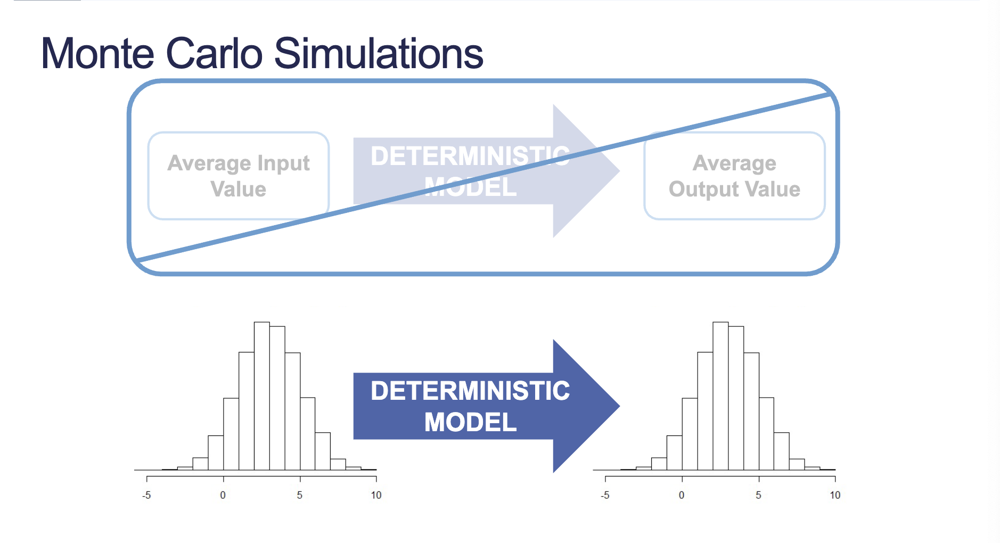
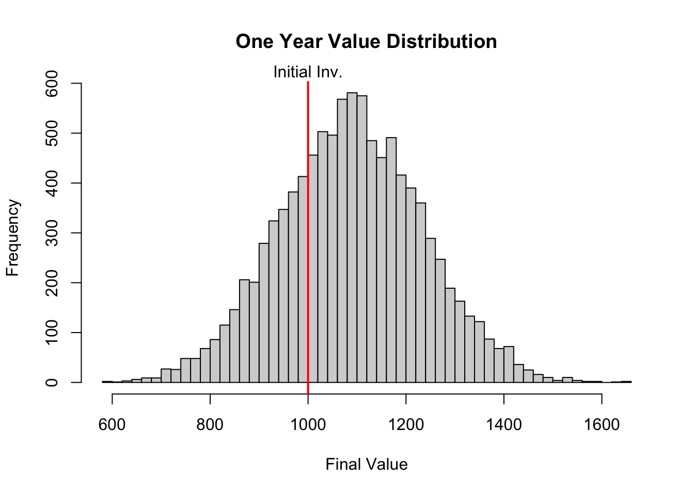
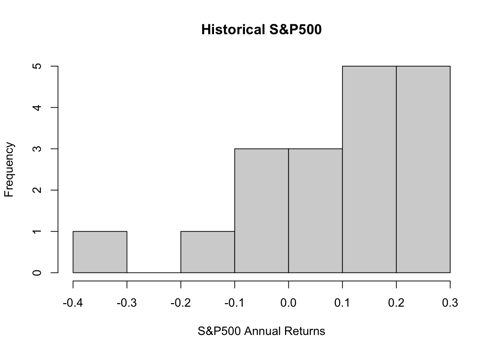
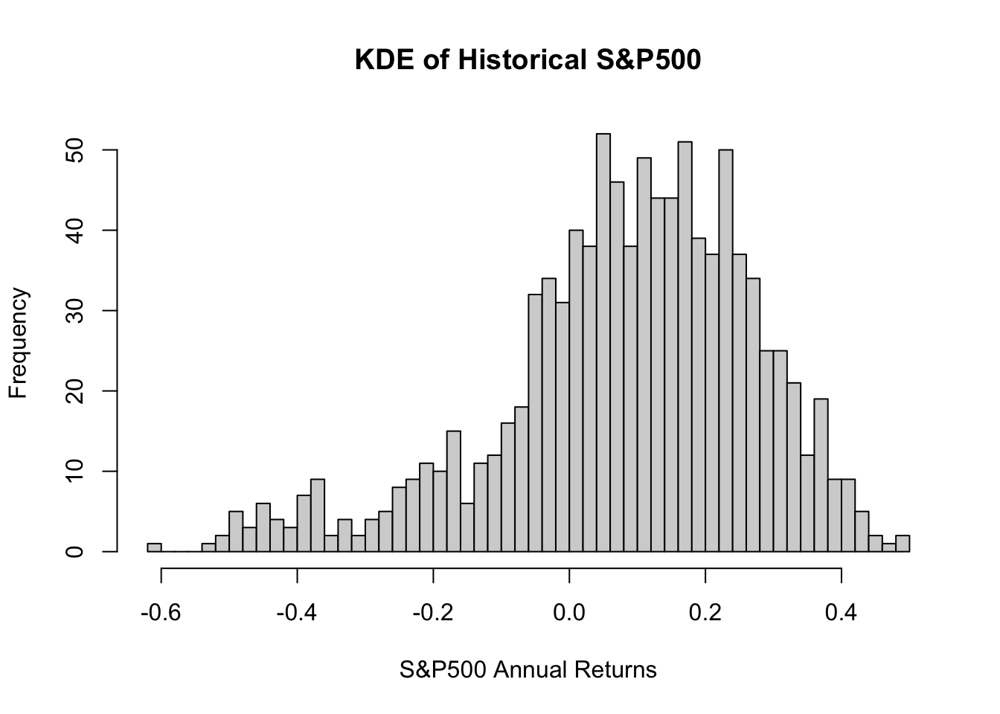
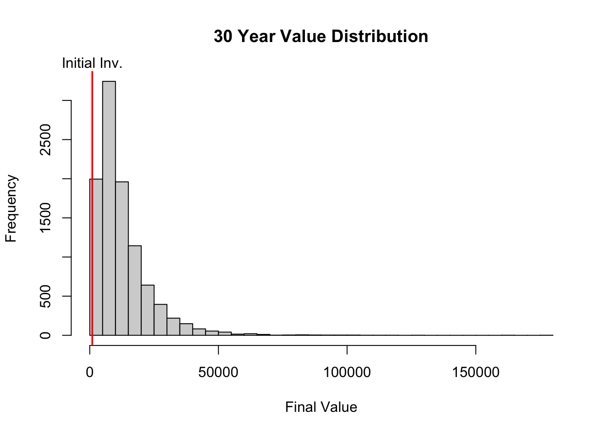

Up until this point we have been assuming an unrealistic view of the real world–certainty. Inputs and coefficients in a problem are rarely fixed quantities in the real world.
2 Monte Carlo Simulations
Simulations help us determine not only the full array of outcomes of a given decision, but the probabilities of these outcomes occurring.

Figure 1: Monte Carlo Simulation
2.1 What-If Analysis
Each input inside of a model is assigned a range of possible values–probability distribution of the inputs.
We analyze what happens to the decision from our model under all of these possible scenarios. Simulation analysis describes not only the outcomes of certain decisions, but also the probability distribution of those outcomes.
2.2 Outcome Distribution
After the simulation analysis, the focus then turns to the probability distribution of the outcomes.
Describe the characteristics of this new distribtuion–mean, variance, skewness, kurtosis, percentiles, etc.
2.3 Selecting Distributions
When designing your simulations the biggest choice comes from the decision of the distribution on the inputs that vary.
Common Probability Distribution
Historical (Empirical) Distribution
Hypothesized Future Distribution
Code
r <-rnorm(n =10000, mean =0.0879, sd =0.1475)P0 <-1000P1 <- P0 * (1+ r)hist(P1, breaks =50, main ="One Year Value Distribution", xlab ="Final Value")abline(v =1000, col ="red", lwd =2)mtext("Initial Inv.", at =1000, cl ="red")
Warning in mtext("Initial Inv.", at = 1000, cl = "red"): "cl" is not a
graphical parameter

3 Distribution Selection
3.1 Common Probability Distributions
Common discrete distributions:
Uniform Distribution
Poisson Distribution
Common continuous distributions:
Continuous Uniform Distribution
Triangular Distribution
Student’s t-Distribution
Lognormal Distribution
Normal Distribution
Exponential Distribution
Chi-Square Distribution
Beta Distribution
There is also a triangle distribution that takes three parameters:
What do you think is the worst outcome?
What do you expect to happen?
What do you think is the best outcome?
3.2 Historical (Empirical) Distributions
If you are unsure of the distribution of the data you are trying to simulate, you can estimate is using kernel density estimation.
Kernel density is a non-parametric method of estimating distributions of data through smoothing our of data values.
If we use a Normal kernel, then we essentially create a Normal distribution around the density of each point and we sum up the distributions to build the density curve. Using KDE, we build variability around our data to fill out the possible other values of our distribution.
Code
library(quantmod)
Loading required package: xts
Loading required package: zoo
Attaching package: 'zoo'
The following objects are masked from 'package:base':
as.Date, as.Date.numeric
Loading required package: TTR
Registered S3 method overwritten by 'quantmod':
method from
as.zoo.data.frame zoo
Code
tickers <-"^GSPC"# Retrieves the stock data associated with the tickersgetSymbols(tickers)
[1] "GSPC"
Code
# Calculate yearly period returns on the closing pricegspc_r <-periodReturn(GSPC$GSPC.Close, period ="yearly")# Plot the distribution of the returnshist(gspc_r, main ="Historical S&P500", xlab ="S&P500 Annual Returns")

Code
# Calculate the kernel density along with the optimal bandwidth valuedensity_GSPC <-density(gspc_r)density_GSPC
Call:
density.default(x = gspc_r)
Data: gspc_r (18 obs.); Bandwidth 'bw' = 0.08189
x y
Min. :-0.63052 Min. :0.003044
1st Qu.:-0.33747 1st Qu.:0.204250
Median :-0.04442 Median :0.422917
Mean :-0.04442 Mean :0.852074
3rd Qu.: 0.24862 3rd Qu.:1.643093
Max. : 0.54167 Max. :2.304845
Code
library(ks)# Random kernel density estimation, with n = 1000 sample sizeest_GSPC <-rkde(fhat =kde(gspc_r, h = density_GSPC$bw), n =1000)hist(est_GSPC, breaks =50, main ="KDE of Historical S&P500", xlab ="S&P500 Annual Returns")

Code
r <- est_GSPCP0 <-1000P1 <- P0 * (1+ r)
Once you have the Kernel density function, you can sample from this density function.
If you have large sample sizes, your bandwidth can be smaller and your estimates more accurate.
If you have small sample sizes, your bandwidth increases and estimates are more smoothed.
3.3 Hypothesized Future Distribution
You might know of an upcoming change that will occur so that the past information is not going to be the future distribution.
Example: The volatility of the market is forecasted to increase, so instead of a standard deviation of 14.75% it is 18.25%.
In these situations, you select any distribution of choice.
4 Compounding and Correlations
Complication arises when you are simulating multiple inputs changing at the same time. Even when the distributions of these inputs are the same, final result cna still be hard to mathematically calculate–benefit of simulation.
When a constant is added to a random variable then the distribution is the same, only shifted by the constant.
The addition of many distributions that are the same is rarely the same shape of distribution–exception would be independent Normal distributions.
The product of many distributions that are the same is rarely the same shape of distribution–exception would be independent lognormal distributions.
4.1 Example
You want to invest $1,000 in the US stock market for thirty years. You invest in a mutual fund that tries to produce the same return as the S&P500 Index.
Assume annual returns follow a Normal distribution with historical mean of 8.79% and std. dev of 14.75% every year.
Code
# Create an initial vector that can store 10000 simulationsP30 <-rep(0, 10000)for (i in1:10000) {# Start with our initial $1,000 investment P0 <-1000# Sample a rate from the random Normal distribution r <-rnorm(n =1, mean =0.0879, sd =0.1475) Pt <- P0 * (1+ r)# For the next 30 years, draw from a random Normal and calculate the returnsfor (j in1:29) { r <-rnorm(n =1, mean =0.0879, sd =0.1475) Pt <- Pt * (1+ r) } P30[i] <- Pt}hist(P30, breaks =50, main ="30 Year Value Distribution", xlab ="Final Value")abline(v =1000, col ="red", lwd =2)mtext("Initial Inv.", at =1000)

4.2 Correlated Inputs
Not all inputs are independent of each other. Need to simulate random variables that have correlation with each other.
4.2.1 Example
You want to invest $1,000 in the US stock market or US Treasury bond for thirty years. You invest a certain percentage in a mutual fund that tries to produce the same return as the S&P500 Index and the rest in US Treasury bonds.
Treasury bonds perceived as safer investment so when stock market does poorly more people invest in bonds–negatively correlated.